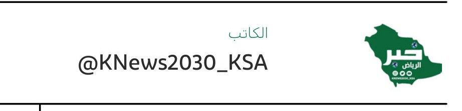
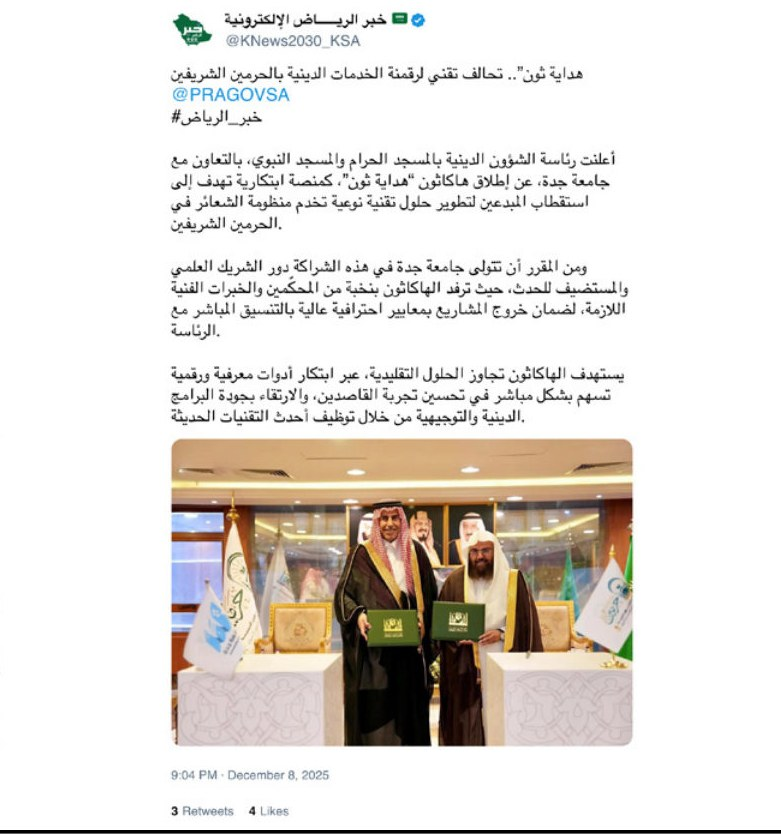
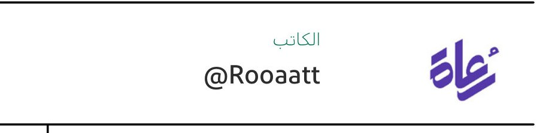
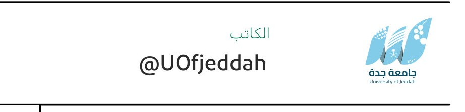
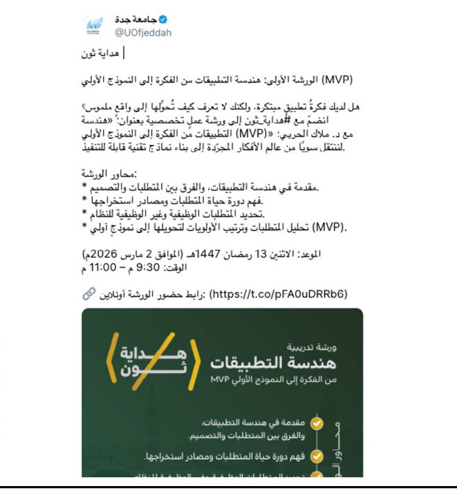
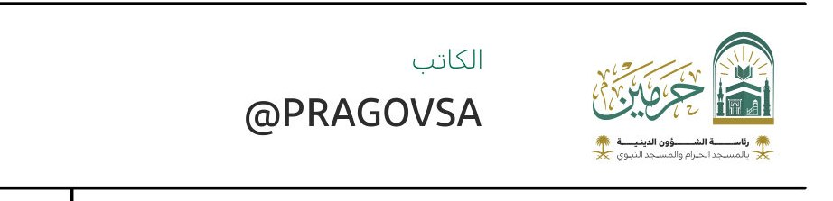
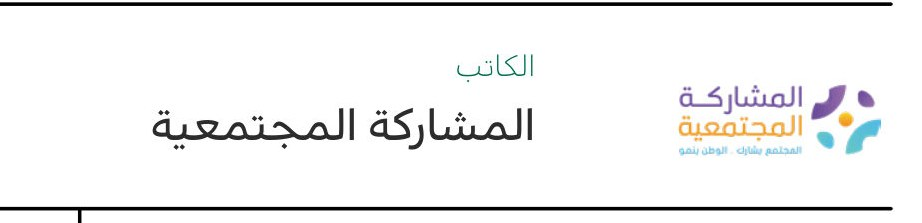
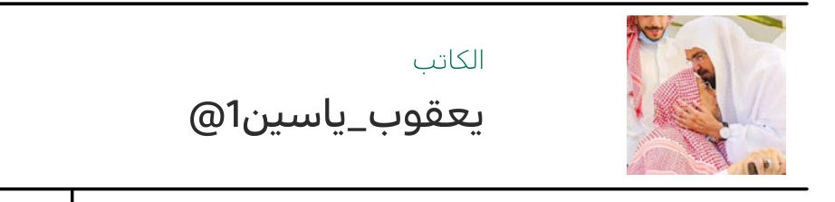
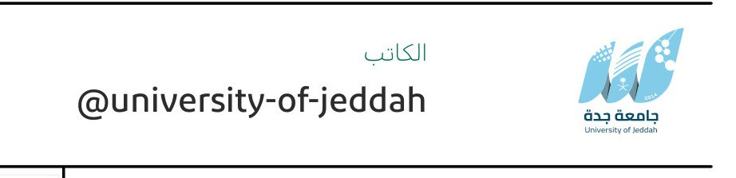
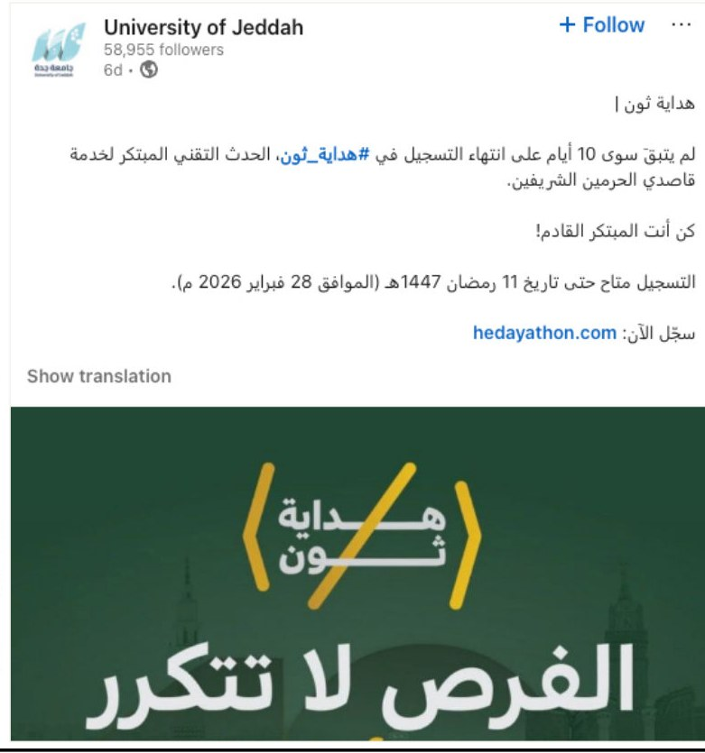

تصنيف المحتوى: إيجابي
الناشر: KNews2030_KSA
المحتوى / الملخص: هداية ثون”.. تحالف تقني لرقمنة الخدمات الدينية بالحرمين
هذه عينة محلية للمراجعة قبل تشغيل القص على كل مواد التقارير القديمة. المعروض هنا هو صورة المحتوى وصورة بروفايل الناشر فقط، وليس صفحة التقرير كاملة.


الناشر: KNews2030_KSA
المحتوى / الملخص: هداية ثون”.. تحالف تقني لرقمنة الخدمات الدينية بالحرمين


الناشر: Rooaatt
المحتوى / الملخص: هداية ثون


الناشر: Duhasa16
المحتوى / الملخص: قبل سنة هبدت لصديقة افكار جبارة عشان التنظيم و كمرات


الناشر: UOfjeddah
المحتوى / الملخص: هداية ثون


الناشر: PRAGOVSA
المحتوى / الملخص: رئاسة الشؤون الدينية تطلق ”هاكاثون هداية ثون“ بالشراكة


الناشر: المشاركة المجتمعية
المحتوى / الملخص: رئاسة الشؤون الدينية وجامعة جدة تطلقان ”هداية ثون“


الناشر: جريدة الرياض
المحتوى / الملخص: السديس يعلن خطة


الناشر: صحيفة الأنباء الكويتية
المحتوى / الملخص: السعودية.. منصات رقمية وخرائط تفاعلية تعزز جودة


الناشر: 1يعقوب
المحتوى / الملخص: مقطع جميلة من حفل تدشين هداية هاكاثون.!


الناشر: university-of-jeddah
المحتوى / الملخص: هداية ثون|